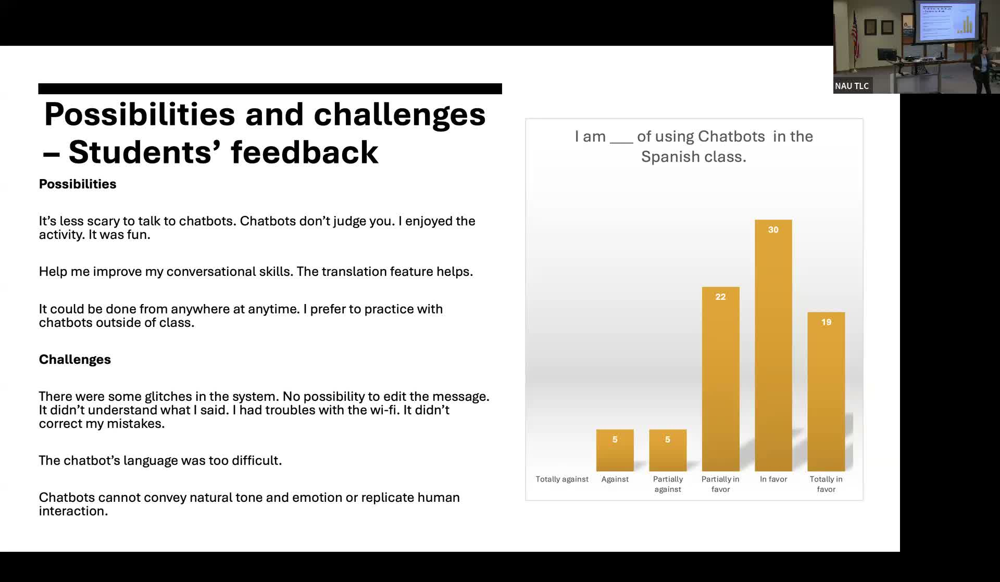

Chatbots for Oral Practice in Spanish Language Courses
Testing Gliglish and Mizou AI chatbots in lower-division Spanish courses to expand speaking practice beyond classroom time.
Presented by Yuly Asencion-Delaney, Spanish Lower Division Coordinator, Northern Arizona University
About This Project
Lower-division Spanish at NAU enrolls approximately 600 students across 24 sections of Spanish 101, 102, and 201. In-class time is limited, and the existing oral assessment model relied on recorded role plays in which students frequently memorized lines or read from scripts, had difficulty finding partners, and were not practicing authentic conversational interaction. Asencion-Delaney undertook an action research project to test whether AI chatbots could provide additional speaking practice outside the classroom and better replicate authentic conversational dynamics.
After training graduate assistant instructors through the practicum course, the project implemented chatbot activities in six sections (two per level) using two apps selected for practicality and cost. Gliglish offers free 10-minute sessions with scaffolding features including translation of chatbot output, multiple-choice answer options, and pronunciation practice. Mizou allows instructors to design custom scenarios; interactions are logged in the teacher's account and the app provides qualitative grades. Chatbot scenarios were drawn from the curriculum (ordering food, checking into a hotel, visiting a doctor). Among 81 students who completed the post-questionnaire, the majority were in favor of chatbot use, and students consistently reported lower anxiety speaking with a chatbot than with a classmate or instructor. Identified challenges included Gliglish's 10-minute session cap, occasional speech recognition errors, and the chatbot's inability to convey natural conversational tone.
Project Highlights

